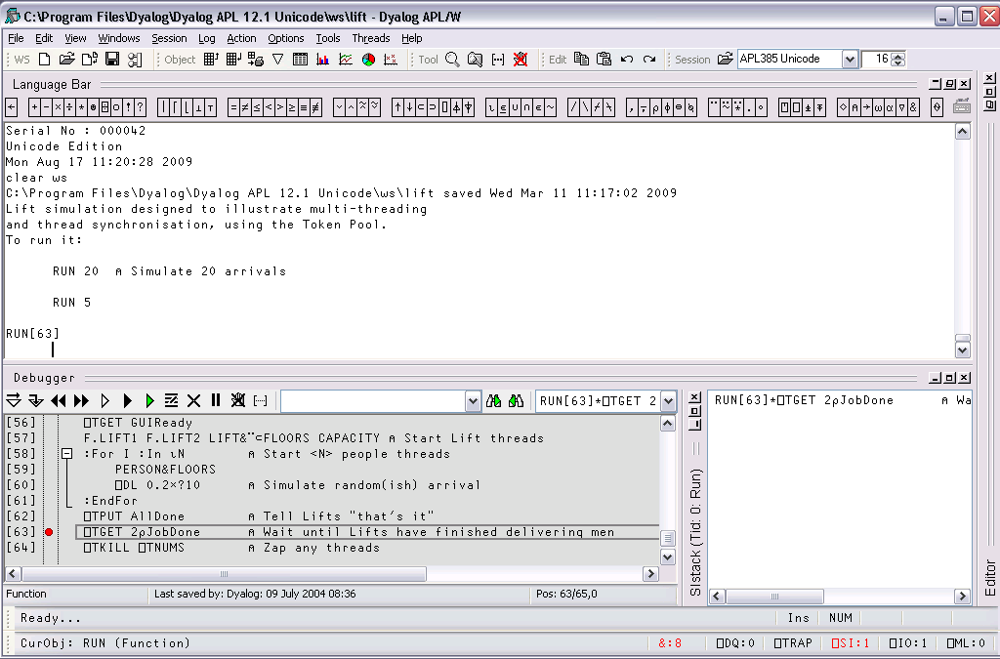
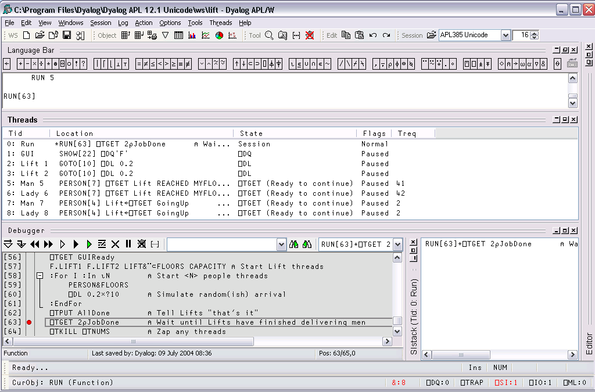
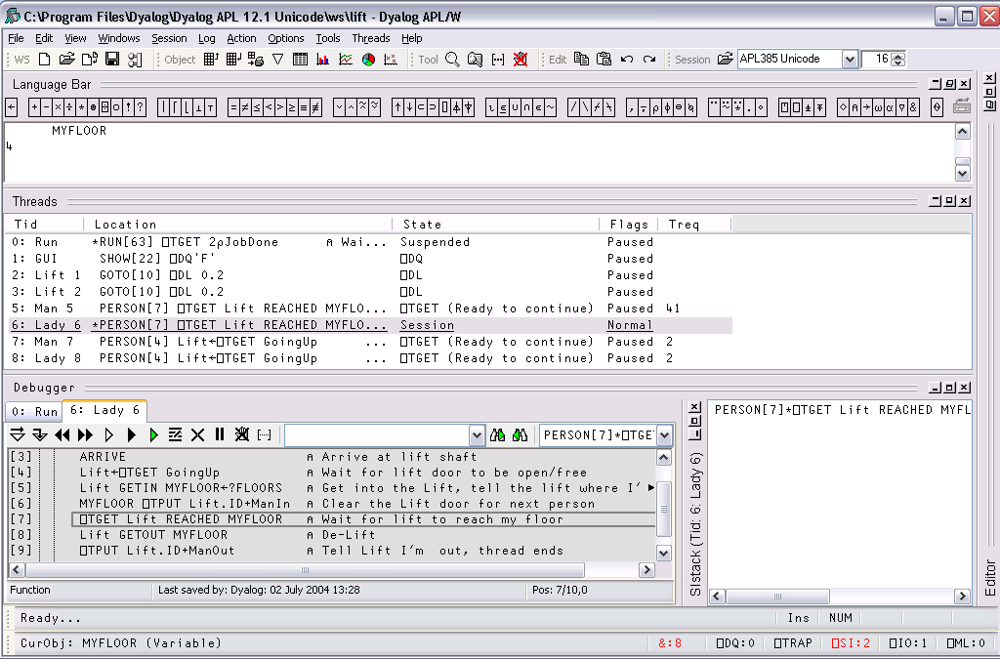
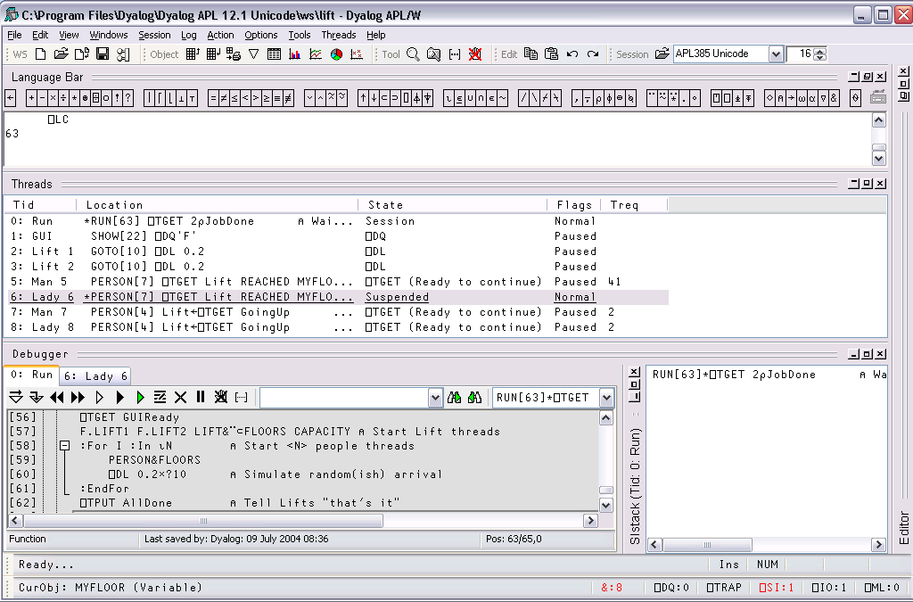

The Debugger provides a tabbed interface that allows you to easily switch between suspended threads for debugging purposes. To keep things simple for non-threaded applications, Tabs are only displayed if there is a thread suspended that is other than Thread 0. The following picture shows the Debugger open on a multi-threaded application (LIFT.DWS) when only Thread 0 is suspended. This has been achieved by setting a stop on RUN[63]

In the next picture, the user has chosen to display the Threads Tool and then dock it between the Session and Debugger windows. Note that only one thread, thread 0 (Run) is suspended. All the other threads are Paused (because Pause on Error is enabled).

The user then uses the context menu to Switch To Thread 6 (whose name is Lady 6) which was Paused on PERSON[7] in the middle of a ⎕TGET. The act of switching to this thread caused it to be suspended at the beginning of its current line PERSON[7] and the Debugger now displays two Tabs to represent the two suspended threads. Note that both the thread id and the thread name are displayed on the Tabs.

Note also that the Session window is connected to the thread indicated by the selected Tab. In this case, typing MYFLOOR into the Session window displays the value of the local variable MYFLOOR in Thread 6 (Lady 6).
You can use the Tabs to switch between the suspended threads, so clicking the Tab labelled 0:Run causes the display to change to the picture shown below. The Session is now connected to Thread 0 (Run), so the value of ⎕LC is 63.
